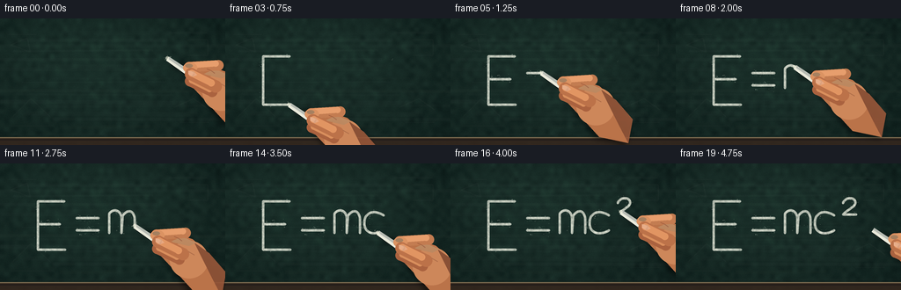
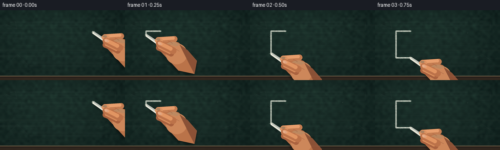

CODING AGENTS AS PIXEL WORLD MODELS
traex/GPT-5.6-Sol · phygen_031
点击播放 · 原生 RGB 像素
逐轮保存的候选
回放视频、检查图与代码变化。
每份候选均可单独播放。实际图片检查记录在下方工具轨迹中。
候选 01播放与检查图
点击播放 · 原生 RGB 像素


展开代码变化
--- 上一保存版本
+++ 本次保存版本
@@ -0,0 +1,303 @@
+from pathlib import Path
+import json
+import math
+import numpy as np
+import cv2
+from PIL import Image, ImageDraw, ImageFilter
+import artifact_io
+
+CASE_DIR = Path(__file__).resolve().parent
+SPEC = json.loads((CASE_DIR / "task_spec.json").read_text())
+W, H = SPEC["width"], SPEC["height"]
+N = SPEC["frames"]
+S = 4
+WW, HH = W*S, H*S
+
+
+def sc_point(p):
+ return tuple(int(round(v*S)) for v in p)
+
+def sc_poly(points):
+ return [sc_point(p) for p in points]
+
+def bezier(p0, p1, p2, p3, count=25):
+ t = np.linspace(0, 1, count)[:, None]
+ p0,p1,p2,p3 = map(lambda p: np.asarray(p,float), (p0,p1,p2,p3))
+ q = (1-t)**3*p0 + 3*(1-t)**2*t*p1 + 3*(1-t)*t*t*p2 + t**3*p3
+ return [tuple(x) for x in q]
+
+def cat(*parts):
+ out=[]
+ for p in parts:
+ out.extend(p if not out else p[1:])
+ return out
+
+# Hand-rendered equation: E = mc². Every list is one continuous chalk stroke.
+strokes = [
+ [(73,43),(43,43),(43,98),(74,98)],
+ [(44,69),(68,69)],
+ [(87,62),(112,62)],
+ [(87,76),(112,76)],
+ cat([(124,79),(124,57)],
+ bezier((124,57),(128,51),(137,52),(138,62),14),
+ [(138,62),(138,79)],
+ bezier((138,62),(143,51),(152,52),(153,63),14),
+ [(153,63),(153,79)]),
+ bezier((180,59),(169,52),(158,55),(158,68),20) + bezier((158,68),(158,80),(170,82),(180,76),20)[1:],
+ cat(bezier((190,45),(193,37),(205,38),(204,45),14),
+ bezier((204,45),(203,50),(194,53),(190,58),14),
+ [(190,58),(205,58)])
+]
+# Allocate screen time for legibility rather than using geometric path length alone.
+durations = np.array([.18,.07,.07,.07,.28,.18,.15], dtype=float)
+durations /= durations.sum()
+bounds = np.r_[0, np.cumsum(durations)]
+
+def point_at(poly, frac):
+ pts=np.asarray(poly,float)
+ if len(pts)==1: return tuple(pts[0]), np.array([1.,0.]), [tuple(pts[0])]
+ seg=pts[1:]-pts[:-1]
+ lens=np.sqrt((seg*seg).sum(1)); total=lens.sum()
+ target=np.clip(frac,0,1)*total
+ k=int(np.searchsorted(np.cumsum(lens),target,side='right'))
+ k=min(k,len(lens)-1)
+ before=0 if k==0 else np.cumsum(lens)[k-1]
+ u=0 if lens[k]==0 else (target-before)/lens[k]
+ q=pts[k]+u*seg[k]
+ partial=[tuple(p) for p in pts[:k+1]]+[tuple(q)]
+ tangent=seg[k]/max(lens[k],1e-6)
+ return tuple(q), tangent, partial
+
+# Fixed multiscale blackboard texture.
+rng=np.random.default_rng(31031)
+yy,xx=np.mgrid[0:HH,0:WW]
+base=np.empty((HH,WW,3),dtype=np.float32)
+base[:]=np.array([19,36,32],np.float32)
+# Broad, soft illumination from upper-left and mild edge vignette.
+light=11*np.exp(-(((xx-WW*.36)/(WW*.70))**2+((yy-HH*.24)/(HH*.82))**2))
+vign=9*((xx-WW/2)/(WW*.72))**2 + 8*((yy-HH/2)/(HH*.76))**2
+fine=rng.normal(0,2.7,(HH,WW)).astype(np.float32)
+coarse=cv2.resize(rng.normal(0,1,(28,50)).astype(np.float32),(WW,HH),interpolation=cv2.INTER_CUBIC)*2.6
+fib=cv2.GaussianBlur(rng.normal(0,1,(HH,WW)).astype(np.float32),(0,0),sigmaX=16,sigmaY=.8)*1.35
+val=light-vign+fine+coarse+fib
+base[:,:,0]+=val*.63; base[:,:,1]+=val; base[:,:,2]+=val*.82
+base=np.clip(base,0,255).astype(np.uint8)
+
+# Subtle old erased marks and long scratches, fixed once.
+bg=Image.fromarray(base,'RGB').convert('RGBA')
+ghost=Image.new('RGBA',(WW,HH),(0,0,0,0)); gd=ImageDraw.Draw(ghost)
+# Eraser haze: broad translucent sweeps.
+for j in range(18):
+ y=(18+j*7+rng.uniform(-2,2))*S
+ x0=rng.uniform(-20,75)*S; x1=rng.uniform(165,285)*S
+ gd.line([(x0,y),(x1,y+rng.uniform(-1.5,1.5)*S)],fill=(155,170,158,int(rng.integers(2,7))),width=int(rng.uniform(2,6)*S))
+# Ghost diagrams and text-like remnants.
+for poly in [
+ [(12,30),(31,22),(34,38),(12,30)], [(213,24),(236,24),(236,42),(213,42)],
+ [(14,112),(35,91),(57,112)], [(198,101),(220,91),(238,104)]
+]:
+ gd.line(sc_poly(poly),fill=(178,188,179,15),width=1*S,joint='curve')
+for x,y,l in [(8,18,33),(192,16,43),(13,122,48),(204,118,34)]:
+ gd.line([(x*S,y*S),((x+l)*S,y*S)],fill=(180,188,180,10),width=S)
+# Hairline scratches.
+for _ in range(85):
+ x=float(rng.uniform(0,W)); y=float(rng.uniform(0,H-9)); length=float(rng.uniform(2,18))
+ gd.line([(x*S,y*S),((x+length)*S,(y+rng.normal(0,.25))*S)],fill=(150,165,156,int(rng.integers(3,11))),width=1)
+ghost=ghost.filter(ImageFilter.GaussianBlur(.38*S))
+bg=Image.alpha_composite(bg,ghost)
+# Wood/metal chalk rail at bottom.
+rail=Image.new('RGBA',(WW,HH),(0,0,0,0)); rd=ImageDraw.Draw(rail)
+rd.rectangle((0,135*S,WW,HH),fill=(52,38,29,255))
+rd.rectangle((0,135*S,WW,136*S),fill=(117,102,77,255))
+rd.rectangle((0,137*S,WW,139*S),fill=(38,31,27,255))
+for y in range(140*S,HH,4): rd.line([(0,y),(WW,y)],fill=(74,51,34,80),width=1)
+bg=Image.alpha_composite(bg,rail)
+bg_arr=np.asarray(bg.convert('RGB'))
+
+# Fixed granular pattern makes completed chalk marks stable across all frames.
+chalk_grain=cv2.GaussianBlur(rng.random((HH,WW)).astype(np.float32),(0,0),.65*S)
+chalk_grain=(chalk_grain-chalk_grain.min())/(np.ptp(chalk_grain)+1e-6)
+chalk_grain=.54+.46*chalk_grain
+
+# Stable powder flecks for each stroke, parameterized by completion fraction.
+flecks=[]
+for si, poly in enumerate(strokes):
+ rr=np.random.default_rng(700+si)
+ group=[]
+ for k in range(46):
+ f=float(rr.random())
+ p,tan,_=point_at(poly,f)
+ normal=np.array([-tan[1],tan[0]])
+ off=float(rr.normal(0,2.4))
+ pos=np.asarray(p)+normal*off+np.asarray(tan)*rr.normal(0,.7)
+ group.append((f,pos,float(rr.uniform(.18,.58)),int(rr.integers(26,85))))
+ flecks.append(group)
+
+
+def rounded_line(draw, p0, p1, width, fill):
+ p0=sc_point(p0); p1=sc_point(p1); w=max(1,int(width*S))
+ draw.line([p0,p1],fill=fill,width=w)
+ r=w//2
+ for p in (p0,p1): draw.ellipse((p[0]-r,p[1]-r,p[0]+r,p[1]+r),fill=fill)
+
+
+def draw_hand_and_chalk(frame_rgba, tip, phase, lifted):
+ """Painterly close-up hand; tip is at contact unless lifted."""
+ tx,ty=tip
+ axis=np.array([.823,.568]); normal=np.array([-axis[1],axis[0]])
+ # Hand follows the chalk grip; tiny natural tremor, no random flicker.
+ jx=.32*math.sin(phase*17.1); jy=.26*math.sin(phase*13.7+1.2)
+ tx+=jx; ty+=jy
+ # Soft board shadow grounds hand/chalk against the surface.
+ shadow=Image.new('RGBA',(WW,HH),(0,0,0,0)); sd=ImageDraw.Draw(shadow)
+ rel=[(29,14),(45,8),(64,14),(82,29),(100,54),(93,78),(58,70),(41,49),(25,29)]
+ poly=[(tx+x+3,ty+y+4) for x,y in rel]
+ sd.polygon(sc_poly(poly),fill=(0,0,0,126))
+ sd.line(sc_poly([(tx+8,ty+9),(tx+57,ty+13)]),fill=(0,0,0,100),width=10*S)
+ shadow=shadow.filter(ImageFilter.GaussianBlur(3.0*S))
+ frame_rgba.alpha_composite(shadow)
+
+ skin=Image.new('RGBA',(WW,HH),(0,0,0,0)); d=ImageDraw.Draw(skin)
+ # Wrist and palm base.
+ palm=[(tx+31,ty+17),(tx+48,ty+9),(tx+66,ty+15),(tx+83,ty+30),
+ (tx+104,ty+53),(tx+99,ty+80),(tx+66,ty+73),(tx+45,ty+50),(tx+27,ty+31)]
+ d.polygon(sc_poly(palm),fill=(181,112,72,255))
+ # Warm palm center and wrist light/shade facets.
+ d.ellipse((int((tx+40)*S),int((ty+17)*S),int((tx+84)*S),int((ty+60)*S)),fill=(199,132,88,255))
+ d.polygon(sc_poly([(tx+68,ty+19),(tx+85,ty+31),(tx+104,ty+53),(tx+99,ty+80),(tx+87,ty+57)]),fill=(154,88,58,220))
+ d.polygon(sc_poly([(tx+41,ty+18),(tx+54,ty+12),(tx+70,ty+19),(tx+62,ty+23)]),fill=(225,160,112,205))
+ # Lower curled finger behind chalk.
+ rounded_line(d,(tx+51,ty+38),(tx+26,ty+26),12,(165,96,62,255))
+ rounded_line(d,(tx+48,ty+35),(tx+28,ty+25),7,(211,139,91,255))
+ frame_rgba.alpha_composite(skin)
+
+ # Chalk itself, laid over palm but under index finger and thumb.
+ ch=Image.new('RGBA',(WW,HH),(0,0,0,0)); cd=ImageDraw.Draw(ch)
+ start=np.array([tx,ty],float)+axis*.4
+ end=np.array([tx,ty],float)+axis*34
+ w0=2.7; w1=3.4
+ body=[start+normal*w0,end+normal*w1,end-normal*w1,start-normal*w0]
+ # Small chalk shadow offset beneath stick.
+ sh=[p+np.array([1.3,1.8]) for p in body]
+ cd.polygon(sc_poly(sh),fill=(0,0,0,100))
+ cd.polygon(sc_poly(body),fill=(222,222,210,255))
+ # Angular side and highlight make it cylindrical/faceted.
+ cd.polygon(sc_poly([start-normal*.2,end-normal*.2,end-normal*w1,start-normal*w0]),fill=(178,182,174,255))
+ cd.line(sc_poly([tuple(start+normal*1.55),tuple(end+normal*1.75)]),fill=(251,249,231,235),width=max(1,S))
+ # Blunt broken far end and fine cracks.
+ cd.line(sc_poly([tuple(end+normal*w1),tuple(end-normal*w1)]),fill=(146,151,144,255),width=S)
+ crack=end-axis*8
+ cd.line(sc_poly([tuple(crack-normal*1.6),tuple(crack+normal*.7+axis*1.5)]),fill=(143,149,143,180),width=1*S)
+ frame_rgba.alpha_composite(ch)
+
+ # Forefinger and thumb form a readable pinch grip.
+ fg=Image.new('RGBA',(WW,HH),(0,0,0,0)); fd=ImageDraw.Draw(fg)
+ rounded_line(fd,(tx+58,ty+8),(tx+25,ty+10),12,(190,121,79,255))
+ rounded_line(fd,(tx+55,ty+6),(tx+28,ty+8),7,(224,154,106,255))
+ # Index fingertip pad wrapping above chalk.
+ fd.ellipse((int((tx+18)*S),int((ty+5)*S),int((tx+34)*S),int((ty+17)*S)),fill=(213,143,96,255))
+ fd.ellipse((int((tx+20.5)*S),int((ty+6.5)*S),int((tx+29)*S),int((ty+11)*S)),fill=(235,173,127,170))
+ # Thumb crossing the lower side of chalk.
+ rounded_line(fd,(tx+55,ty+32),(tx+27,ty+18),14,(183,111,72,255))
+ rounded_line(fd,(tx+50,ty+28),(tx+28,ty+17),8,(219,145,96,255))
+ # Thumbnail and skin creases.
+ fd.polygon(sc_poly([(tx+24,ty+14),(tx+30,ty+15),(tx+34,ty+19),(tx+29,ty+21),(tx+24,ty+18)]),fill=(228,167,130,235))
+ fd.line(sc_poly([(tx+45,ty+12),(tx+50,ty+14),(tx+54,ty+17)]),fill=(132,72,52,115),width=1*S)
+ fd.line(sc_poly([(tx+61,ty+29),(tx+68,ty+33)]),fill=(126,69,49,105),width=1*S)
+ frame_rgba.alpha_composite(fg)
+
+ # Contact compression and fresh powder sit over the tip only while writing.
+ if not lifted:
+ dust=Image.new('RGBA',(WW,HH),(0,0,0,0)); dd=ImageDraw.Draw(dust)
+ dd.ellipse((int((tx-2.0)*S),int((ty-2.0)*S),int((tx+2.0)*S),int((ty+2.0)*S)),fill=(242,241,221,150))
+ for k in range(7):
+ a=phase*31.7+k*2.399
+ rr=2.3+(k%3)*1.15
+ x=tx+math.cos(a)*rr; y=ty+math.sin(a)*rr*.65
+ r=.22+(k%2)*.18
+ dd.ellipse((int((x-r)*S),int((y-r)*S),int((x+r)*S),int((y+r)*S)),fill=(238,238,219,95))
+ frame_rgba.alpha_composite(dust)
+
+
+def render_chalk(base_rgb, completed, fractions):
+ mask=np.zeros((HH,WW),dtype=np.uint8)
+ powder=Image.new('RGBA',(WW,HH),(0,0,0,0)); pd=ImageDraw.Draw(powder)
+ for si,frac in enumerate(fractions):
+ if frac<=0: continue
+ _,_,partial=point_at(strokes[si],frac)
+ pts=np.round(np.asarray(partial)*S).astype(np.int32)
+ if len(pts)>=2:
+ cv2.polylines(mask,[pts],False,238,9,lineType=cv2.LINE_AA)
+ cv2.polylines(mask,[pts],False,255,3,lineType=cv2.LINE_AA)
+ else:
+ cv2.circle(mask,tuple(pts[0]),4,230,-1,lineType=cv2.LINE_AA)
+ for f,pos,r,a in flecks[si]:
+ if f<=frac:
+ x,y=pos; rr=max(1,int(r*S))
+ pd.ellipse((int(x*S-rr),int(y*S-rr),int(x*S+rr),int(y*S+rr)),fill=(231,235,220,a))
+ alpha=(mask.astype(np.float32)*chalk_grain).astype(np.uint8)
+ # Chalk is warm white with a subtle green-gray underside from the board.
+ lay=np.zeros((HH,WW,4),dtype=np.uint8)
+ lay[:,:,:3]=np.array([235,237,222],dtype=np.uint8)
+ lay[:,:,3]=alpha
+ out=Image.fromarray(base_rgb,'RGB').convert('RGBA')
+ out=Image.alpha_composite(out,powder)
+ out=Image.alpha_composite(out,Image.fromarray(lay,'RGBA'))
+ return out
+
+frames=[]
+# Precompute current tip positions for persistent airborne dust births.
+tips=[]; all_fracs=[]
+for i in range(N):
+ u=i/(N-1)
+ wt=min(u/.89,1.0)
+ fractions=[]
+ active=len(strokes)-1
+ for j in range(len(strokes)):
+ if wt>=bounds[j+1]: fractions.append(1.0)
+ elif wt<=bounds[j]: fractions.append(0.0)
+ else:
+ fractions.append((wt-bounds[j])/(bounds[j+1]-bounds[j])); active=j
+ if wt>=1: active=len(strokes)-1
+ frac=fractions[active]
+ tip,tan,_=point_at(strokes[active],frac)
+ tips.append(np.array(tip,float)); all_fracs.append(fractions)
+
+for i in range(N):
+ u=i/(N-1)
+ fractions=all_fracs[i]
+ canvas=render_chalk(bg_arr,0,fractions)
+
+ # A handful of dust grains spawned during earlier frames, settling downward.
+ floatdust=Image.new('RGBA',(WW,HH),(0,0,0,0)); fd=ImageDraw.Draw(floatdust)
+ for birth in range(max(0,i-6),i+1):
+ if birth>=17: continue
+ age=i-birth
+ rr=np.random.default_rng(9200+birth)
+ for q in range(3):
+ dx=float(rr.normal(-.7,1.8))+age*float(rr.uniform(-.12,.15))
+ dy=float(rr.normal(.2,1.1))+age*age*.10+age*.25
+ x,y=tips[birth]+[dx,dy]
+ rad=float(rr.uniform(.16,.38))*S
+ alpha=int(max(0,105-age*13))
+ fd.ellipse((int(x*S-rad),int(y*S-rad),int(x*S+rad),int(y*S+rad)),fill=(239,239,220,alpha))
+ canvas.alpha_composite(floatdust)
+
+ # In the final half second, pull chalk away down-right to reveal the finished equation.
+ retract=np.clip((u-.89)/.11,0,1)
+ ease=retract*retract*(3-2*retract)
+ tip=tips[i]+np.array([19*ease,17*ease])
+ draw_hand_and_chalk(canvas,tip,u,lifted=(retract>.08))
+
+ # Very slight photographic tonal finishing, then high-quality downsample.
+ rgb=canvas.convert('RGB').resize((W,H),Image.Resampling.LANCZOS)
+ arr=np.asarray(rgb).astype(np.float32)
+ # Gentle contrast; preserve dark board detail and chalk highlights.
+ arr=(arr-20)*1.035+20
+ arr=np.clip(arr,0,255).astype(np.uint8)
+ frames.append(arr)
+
+frames=np.stack(frames,axis=0)
+assert frames.shape==(N,H,W,3) and frames.dtype==np.uint8
+artifact_io.save(frames, CASE_DIR)
+print(f"saved {frames.shape} RGB frames; range={frames.min()}..{frames.max()}")
可观测工具轨迹
实际执行的命令与返回图片。
命令 1exit 0
/bin/bash -lc "cat prompt.txt && printf '\\n--- GENERATION_RULES.md ---\\n' && cat GENERATION_RULES.md"
命令 2exit 0
/bin/bash -lc "cat task_spec.json && printf '\\n--- FILES ---\\n' && find . -maxdepth 2 -type f -printf '%p %s bytes\\n' | sort"
命令 3exit 0
/bin/bash -lc "command -v ffmpeg; command -v blender; command -v python3; python3 - <<'PY' mods=['numpy','PIL','cv2','imageio','moviepy','cairo','moderngl'] for m in mods: try: x=__import__(m); print(m,'OK',getattr(x,'__version__','')) except Exception as e: print(m,'NO',e) PY"
命令 4exit 0
/bin/bash -lc "sed -n '1,240p' artifact_io.py"
命令 5exit 0
/bin/bash -lc "cat > generate.py <<'PY'
from pathlib import Path
import json
import math
import numpy as np
import cv2
from PIL import Image, ImageDraw, ImageFilter
import artifact_io
CASE_DIR = Path(__file__).resolve().parent
SPEC = json.loads((CASE_DIR / \"task_spec.json\").read_text())
W, H = SPEC[\"width\"], SPEC[\"height\"]
N = SPEC[\"frames\"]
S = 4
WW, HH = W*S, H*S
def sc_point(p):
return tuple(int(round(v*S)) for v in p)
def sc_poly(points):
return [sc_point(p) for p in points]
def bezier(p0, p1, p2, p3, count=25):
t = np.linspace(0, 1, count)[:, None]
p0,p1,p2,p3 = map(lambda p: np.asarray(p,float), (p0,p1,p2,p3))
q = (1-t)**3*p0 + 3*(1-t)**2*t*p1 + 3*(1-t)*t*t*p2 + t**3*p3
return [tuple(x) for x in q]
def cat(*parts):
out=[]
for p in parts:
out.extend(p if not out else p[1:])
return out
# Hand-rendered equation: E = mc². Every list is one continuous chalk stroke.
strokes = [
[(73,43),(43,43),(43,98),(74,98)],
[(44,69),(68,69)],
[(87,62),(112,62)],
[(87,76),(112,76)],
cat([(124,79),(124,57)],
bezier((124,57),(128,51),(137,52),(138,62),14),
[(138,62),(138,79)],
bezier((138,62),(143,51),(152,52),(153,63),14),
[(153,63),(153,79)]),
bezier((180,59),(169,52),(158,55),(158,68),20) + bezier((158,68),(158,80),(170,82),(180,76),20)[1:],
cat(bezier((190,45),(193,37),(205,38),(204,45),14),
bezier((204,45),(203,50),(194,53),(190,58),14),
[(190,58),(205,58)])
]
# Allocate screen time for legibility rather than using geometric path length alone.
durations = np.array([.18,.07,.07,.07,.28,.18,.15], dtype=float)
durations /= durations.sum()
bounds = np.r_[0, np.cumsum(durations)]
def point_at(poly, frac):
pts=np.asarray(poly,float)
if len(pts)==1: return tuple(pts[0]), np.array([1.,0.]), [tuple(pts[0])]
seg=pts[1:]-pts[:-1]
lens=np.sqrt((seg*seg).sum(1)); total=lens.sum()
target=np.clip(frac,0,1)*total
k=int(np.searchsorted(np.cumsum(lens),target,side='right'))
k=min(k,len(lens)-1)
before=0 if k==0 else np.cumsum(lens)[k-1]
u=0 if lens[k]==0 else (target-before)/lens[k]
q=pts[k]+u*seg[k]
partial=[tuple(p) for p in pts[:k+1]]+[tuple(q)]
tangent=seg[k]/max(lens[k],1e-6)
return tuple(q), tangent, partial
# Fixed multiscale blackboard texture.
rng=np.random.default_rng(31031)
yy,xx=np.mgrid[0:HH,0:WW]
base=np.empty((HH,WW,3),dtype=np.float32)
base[:]=np.array([19,36,32],np.float32)
# Broad, soft illumination from upper-left and mild edge vignette.
light=11*np.exp(-(((xx-WW*.36)/(WW*.70))**2+((yy-HH*.24)/(HH*.82))**2))
vign=9*((xx-WW/2)/(WW*.72))**2 + 8*((yy-HH/2)/(HH*.76))**2
fine=rng.normal(0,2.7,(HH,WW)).astype(np.float32)
coarse=cv2.resize(rng.normal(0,1,(28,50)).astype(np.float32),(WW,HH),interpolation=cv2.INTER_CUBIC)*2.6
fib=cv2.GaussianBlur(rng.normal(0,1,(HH,WW)).astype(np.float32),(0,0),sigmaX=16,sigmaY=.8)*1.35
val=light-vign+fine+coarse+fib
base[:,:,0]+=val*.63; base[:,:,1]+=val; base[:,:,2]+=val*.82
base=np.clip(base,0,255).astype(np.uint8)
# Subtle old erased marks and long scratches, fixed once.
bg=Image.fromarray(base,'RGB').convert('RGBA')
ghost=Image.new('RGBA',(WW,HH),(0,0,0,0)); gd=ImageDraw.Draw(ghost)
# Eraser haze: broad translucent sweeps.
for j in range(18):
y=(18+j*7+rng.uniform(-2,2))*S
x0=rng.uniform(-20,75)*S; x1=rng.uniform(165,285)*S
gd.line([(x0,y),(x1,y+rng.uniform(-1.5,1.5)*S)],fill=(155,170,158,int(rng.integers(2,7))),width=int(rng.uniform(2,6)*S))
# Ghost diagrams and text-like remnants.
for poly in [
[(12,30),(31,22),(34,38),(12,30)], [(213,24),(236,24),(236,42),(213,42)],
[(14,112),(35,91),(57,112)], [(198,101),(220,91),(238,104)]
]:
gd.line(sc_poly(poly),fill=(178,188,179,15),width=1*S,joint='curve')
for x,y,l in [(8,18,33),(192,16,43),(13,122,48),(204,118,34)]:
gd.line([(x*S,y*S),((x+l)*S,y*S)],fill=(180,188,180,10),width=S)
# Hairline scratches.
for _ in range(85):
x=float(rng.uniform(0,W)); y=float(rng.uniform(0,H-9)); length=float(rng.uniform(2,18))
gd.line([(x*S,y*S),((x+length)*S,(y+rng.normal(0,.25))*S)],fill=(150,165,156,int(rng.integers(3,11))),width=1)
ghost=ghost.filter(ImageFilter.GaussianBlur(.38*S))
bg=Image.alpha_composite(bg,ghost)
# Wood/metal chalk rail at bottom.
rail=Image.new('RGBA',(WW,HH),(0,0,0,0)); rd=ImageDraw.Draw(rail)
rd.rectangle((0,135*S,WW,HH),fill=(52,38,29,255))
rd.rectangle((0,135*S,WW,136*S),fill=(117,102,77,255))
rd.rectangle((0,137*S,WW,139*S),fill=(38,31,27,255))
for y in range(140*S,HH,4): rd.line([(0,y),(WW,y)],fill=(74,51,34,80),width=1)
bg=Image.alpha_composite(bg,rail)
bg_arr=np.asarray(bg.convert('RGB'))
# Fixed granular pattern makes completed chalk marks stable across all frames.
chalk_grain=cv2.GaussianBlur(rng.random((HH,WW)).astype(np.float32),(0,0),.65*S)
chalk_grain=(chalk_grain-chalk_grain.min())/(np.ptp(chalk_grain)+1e-6)
chalk_grain=.54+.46*chalk_grain
# Stable powder flecks for each stroke, parameterized by completion fraction.
flecks=[]
for si, poly in enumerate(strokes):
rr=np.random.default_rng(700+si)
group=[]
for k in range(46):
f=float(rr.random())
p,tan,_=point_at(poly,f)
normal=np.array([-tan[1],tan[0]])
off=float(rr.normal(0,2.4))
pos=np.asarray(p)+normal*off+np.asarray(tan)*rr.normal(0,.7)
group.append((f,pos,float(rr.uniform(.18,.58)),int(rr.integers(26,85))))
flecks.append(group)
def rounded_line(draw, p0, p1, width, fill):
p0=sc_point(p0); p1=sc_point(p1); w=max(1,int(width*S))
draw.line([p0,p1],fill=fill,width=w)
r=w//2
for p in (p0,p1): draw.ellipse((p[0]-r,p[1]-r,p[0]+r,p[1]+r),fill=fill)
def draw_hand_and_chalk(frame_rgba, tip, phase, lifted):
\"\"\"Painterly close-up hand; tip is at contact unless lifted.\"\"\"
tx,ty=tip
axis=np.array([.823,.568]); normal=np.array([-axis[1],axis[0]])
# Hand follows the chalk grip; tiny natural tremor, no random flicker.
jx=.32*math.sin(phase*17.1); jy=.26*math.sin(phase*13.7+1.2)
tx+=jx; ty+=jy
# Soft board shadow grounds hand/chalk against the surface.
shadow=Image.new('RGBA',(WW,HH),(0,0,0,0)); sd=ImageDraw.Draw(shadow)
rel=[(29,14),(45,8),(64,14),(82,29),(100,54),(93,78),(58,70),(41,49),(25,29)]
poly=[(tx+x+3,ty+y+4) for x,y in rel]
sd.polygon(sc_poly(poly),fill=(0,0,0,126))
sd.line(sc_poly([(tx+8,ty+9),(tx+57,ty+13)]),fill=(0,0,0,100),width=10*S)
shadow=shadow.filter(ImageFilter.GaussianBlur(3.0*S))
frame_rgba.alpha_composite(shadow)
skin=Image.new('RGBA',(WW,HH),(0,0,0,0)); d=ImageDraw.Draw(skin)
# Wrist and palm base.
palm=[(tx+31,ty+17),(tx+48,ty+9),(tx+66,ty+15),(tx+83,ty+30),
(tx+104,ty+53),(tx+99,ty+80),(tx+66,ty+73),(tx+45,ty+50),(tx+27,ty+31)]
d.polygon(sc_poly(palm),fill=(181,112,72,255))
# Warm palm center and wrist light/shade facets.
d.ellipse((int((tx+40)*S),int((ty+17)*S),int((tx+84)*S),int((ty+60)*S)),fill=(199,132,88,255))
d.polygon(sc_poly([(tx+68,ty+19),(tx+85,ty+31),(tx+104,ty+53),(tx+99,ty+80),(tx+87,ty+57)]),fill=(154,88,58,220))
d.polygon(sc_poly([(tx+41,ty+18),(tx+54,ty+12),(tx+70,ty+19),(tx+62,ty+23)]),fill=(225,160,112,205))
# Lower curled finger behind chalk.
rounded_line(d,(tx+51,ty+38),(tx+26,ty+26),12,(165,96,62,255))
rounded_line(d,(tx+48,ty+35),(tx+28,ty+25),7,(211,139,91,255))
frame_rgba.alpha_composite(skin)
# Chalk itself, laid over palm but under index finger and thumb.
ch=Image.new('RGBA',(WW,HH),(0,0,0,0)); cd=ImageDraw.Draw(ch)
start=np.array([tx,ty],float)+axis*.4
end=np.array([tx,ty],float)+axis*34
w0=2.7; w1=3.4
body=[start+normal*w0,end+normal*w1,end-normal*w1,start-normal*w0]
# Small chalk shadow offset beneath stick.
sh=[p+np.array([1.3,1.8]) for p in body]
cd.polygon(sc_poly(sh),fill=(0,0,0,100))
cd.polygon(sc_poly(body),fill=(222,222,210,255))
# Angular side and highlight make it cylindrical/faceted.
cd.polygon(sc_poly([start-normal*.2,end-normal*.2,end-normal*w1,start-normal*w0]),fill=(178,182,174,255))
cd.line(sc_poly([tuple(start+normal*1.55),tuple(end+normal*1.75)]),fill=(251,249,231,235),width=max(1,S))
# Blunt broken far end and fine cracks.
cd.line(sc_poly([tuple(end+normal*w1),tuple(end-normal*w1)]),fill=(146,151,144,255),width=S)
crack=end-axis*8
cd.line(sc_poly([tuple(crack-normal*1.6),tuple(crack+normal*.7+axis*1.5)]),fill=(143,149,143,180),width=1*S)
frame_rgba.alpha_composite(ch)
# Forefinger and thumb form a readable pinch grip.
fg=Image.new('RGBA',(WW,HH),(0,0,0,0)); fd=ImageDraw.Draw(fg)
rounded_line(fd,(tx+58,ty+8),(tx+25,ty+10),12,(190,121,79,255))
rounded_line(fd,(tx+55,ty+6),(tx+28,ty+8),7,(224,154,106,255))
# Index fingertip pad wrapping above chalk.
fd.ellipse((int((tx+18)*S),int((ty+5)*S),int((tx+34)*S),int((ty+17)*S)),fill=(213,143,96,255))
fd.ellipse((int((tx+20.5)*S),int((ty+6.5)*S),int((tx+29)*S),int((ty+11)*S)),fill=(235,173,127,170))
# Thumb crossing the lower side of chalk.
rounded_line(fd,(tx+55,ty+32),(tx+27,ty+18),14,(183,111,72,255))
rounded_line(fd,(tx+50,ty+28),(tx+28,ty+17),8,(219,145,96,255))
# Thumbnail and skin creases.
fd.polygon(sc_poly([(tx+24,ty+14),(tx+30,ty+15),(tx+34,ty+19),(tx+29,ty+21),(tx+24,ty+18)]),fill=(228,167,130,235))
fd.line(sc_poly([(tx+45,ty+12),(tx+50,ty+14),(tx+54,ty+17)]),fill=(132,72,52,115),width=1*S)
fd.line(sc_poly([(tx+61,ty+29),(tx+68,ty+33)]),fill=(126,69,49,105),width=1*S)
frame_rgba.alpha_composite(fg)
# Contact compression and fresh powder sit over the tip only while writing.
if not lifted:
dust=Image.new('RGBA',(WW,HH),(0,0,0,0)); dd=ImageDraw.Draw(dust)
dd.ellipse((int((tx-2.0)*S),int((ty-2.0)*S),int((tx+2.0)*S),int((ty+2.0)*S)),fill=(242,241,221,150))
for k in range(7):
a=phase*31.7+k*2.399
rr=2.3+(k%3)*1.15
x=tx+math.cos(a)*rr; y=ty+math.sin(a)*rr*.65
r=.22+(k%2)*.18
dd.ellipse((int((x-r)*S),int((y-r)*S),int((x+r)*S),int((y+r)*S)),fill=(238,238,219,95))
frame_rgba.alpha_composite(dust)
def render_chalk(base_rgb, completed, fractions):
mask=np.zeros((HH,WW),dtype=np.uint8)
powder=Image.new('RGBA',(WW,HH),(0,0,0,0)); pd=ImageDraw.Draw(powder)
for si,frac in enumerate(fractions):
if frac<=0: continue
_,_,partial=point_at(strokes[si],frac)
pts=np.round(np.asarray(partial)*S).astype(np.int32)
if len(pts)>=2:
cv2.polylines(mask,[pts],False,238,9,lineType=cv2.LINE_AA)
cv2.polylines(mask,[pts],False,255,3,lineType=cv2.LINE_AA)
else:
cv2.circle(mask,tuple(pts[0]),4,230,-1,lineType=cv2.LINE_AA)
for f,pos,r,a in flecks[si]:
if f<=frac:
x,y=pos; rr=max(1,int(r*S))
pd.ellipse((int(x*S-rr),int(y*S-rr),int(x*S+rr),int(y*S+rr)),fill=(231,235,220,a))
alpha=(mask.astype(np.float32)*chalk_grain).astype(np.uint8)
# Chalk is warm white with a subtle green-gray underside from the board.
lay=np.zeros((HH,WW,4),dtype=np.uint8)
lay[:,:,:3]=np.array([235,237,222],dtype=np.uint8)
lay[:,:,3]=alpha
out=Image.fromarray(base_rgb,'RGB').convert('RGBA')
out=Image.alpha_composite(out,powder)
out=Image.alpha_composite(out,Image.fromarray(lay,'RGBA'))
return out
frames=[]
# Precompute current tip positions for persistent airborne dust births.
tips=[]; all_fracs=[]
for i in range(N):
u=i/(N-1)
wt=min(u/.89,1.0)
fractions=[]
active=len(strokes)-1
for j in range(len(strokes)):
if wt>=bounds[j+1]: fractions.append(1.0)
elif wt<=bounds[j]: fractions.append(0.0)
else:
fractions.append((wt-bounds[j])/(bounds[j+1]-bounds[j])); active=j
if wt>=1: active=len(strokes)-1
frac=fractions[active]
tip,tan,_=point_at(strokes[active],frac)
tips.append(np.array(tip,float)); all_fracs.append(fractions)
for i in range(N):
u=i/(N-1)
fractions=all_fracs[i]
canvas=render_chalk(bg_arr,0,fractions)
# A handful of dust grains spawned during earlier frames, settling downward.
floatdust=Image.new('RGBA',(WW,HH),(0,0,0,0)); fd=ImageDraw.Draw(floatdust)
for birth in range(max(0,i-6),i+1):
if birth>=17: continue
age=i-birth
rr=np.random.default_rng(9200+birth)
for q in range(3):
dx=float(rr.normal(-.7,1.8))+age*float(rr.uniform(-.12,.15))
dy=float(rr.normal(.2,1.1))+age*age*.10+age*.25
x,y=tips[birth]+[dx,dy]
rad=float(rr.uniform(.16,.38))*S
alpha=int(max(0,105-age*13))
fd.ellipse((int(x*S-rad),int(y*S-rad),int(x*S+rad),int(y*S+rad)),fill=(239,239,220,alpha))
canvas.alpha_composite(floatdust)
# In the final half second, pull chalk away down-right to reveal the finished equation.
retract=np.clip((u-.89)/.11,0,1)
ease=retract*retract*(3-2*retract)
tip=tips[i]+np.array([19*ease,17*ease])
draw_hand_and_chalk(canvas,tip,u,lifted=(retract>.08))
# Very slight photographic tonal finishing, then high-quality downsample.
rgb=canvas.convert('RGB').resize((W,H),Image.Resampling.LANCZOS)
arr=np.asarray(rgb).astype(np.float32)
# Gentle contrast; preserve dark board detail and chalk highlights.
arr=(arr-20)*1.035+20
arr=np.clip(arr,0,255).astype(np.uint8)
frames.append(arr)
frames=np.stack(frames,axis=0)
assert frames.shape==(N,H,W,3) and frames.dtype==np.uint8
artifact_io.save(frames, CASE_DIR)
print(f\"saved {frames.shape} RGB frames; range={frames.min()}..{frames.max()}\")
PY
python3 generate.py
ls -lh pixels.npz inspection.png transition_check.png index.html frames/00.png frames/19.png"命令 6exit 0
/bin/bash -lc "python3 - <<'PY'
from pathlib import Path
import numpy as np
from PIL import Image
p=np.load('pixels.npz')['pixels']
assert p.shape==(144,256,20),p.shape
assert p.dtype==np.uint32,p.dtype
ims=[]
for i in range(20):
im=Image.open(f'frames/{i:02d}.png')
assert im.mode=='RGB' and im.size==(256,144),(im.mode,im.size)
a=np.array(im); ims.append(a)
packed=(a[:,:,0].astype(np.uint32)<<16)|(a[:,:,1].astype(np.uint32)<<8)|a[:,:,2].astype(np.uint32)
assert np.array_equal(p[:,:,i],packed)
ims=np.stack(ims)
diff=np.abs(np.diff(ims.astype(np.int16),axis=0))
print('pixels',p.shape,p.dtype)
print('frame mean RGB',np.round(ims.mean((0,1,2)),2))
print('adjacent changed px',[(int(np.any(diff[i]>0,axis=2).sum())) for i in range(19)])
print('adjacent MAE',np.round(diff.mean((1,2,3)),2).tolist())
print('all contract checks passed')
PY"命令 7exit 0
/bin/bash -lc "python3 - <<'PY'
from pathlib import Path
import hashlib, subprocess, sys
files=[Path('pixels.npz'),Path('inspection.png')]+[Path('frames')/f'{i:02d}.png' for i in range(20)]
def h(p): return hashlib.sha256(p.read_bytes()).hexdigest()
before={str(p):h(p) for p in files}
r=subprocess.run([sys.executable,'generate.py'],capture_output=True,text=True,check=True)
after={str(p):h(p) for p in files}
assert before==after, [k for k in before if before[k]"'!=after[k]]
print(r.stdout.strip())
print('"'deterministic regeneration: PASS (22/22 artifact hashes identical)')
PY"保存候选 1 份；完成命令 7 次；可验证图片返回 0 张。原始 API 响应与完整日志保留在本地。